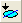

FAQ-226 Wie passe ich einen Teil der Zeichnung in meinem Diagramm an?
Fit-Partial-Plot
Letztes Update: 04.02.2015
Sie haben mehrere Optionen:
- Wählen Sie bei aktivem Diagramm das Hilfsmittel Datenselektor , das sich in der Symbolleiste Hilfsmittel befindet. Sie werden eine Markierung am Anfang des Datendiagramms sehen und eine am Ende. Klicken Sie auf die jeweilige Markierung, um sie an die gewünschten Anfangs- und Endpositionen zu setzen. Während Sie die Markierungen verschieben, können Sie die X- und Y-Koordinatenwerte vom Fenster Datenanzeige ablesen. Wenn Sie jede Markierungsposition festgelegt haben, klicken Sie doppelt oder drücken Sie Enter, um diesen Bereich festzulegen.
- Klicken Sie auf den regionalen Datenselektor . Mit diesem Hilfsmittel können Sie einen anzupassenden Bereich im Diagramm per Drag&Drop auswählen. Ein Paar der Datenmarkierungen wird angezeigt, um anzuzeigen, welche Daten eingegeben werden.
- Öffnen Sie den Dialog NLFit durch Auswahl von Analyse: Anpassen: Nichtlinearer Fit. Auf der Registerkarte Datenauswahl / Einstellungen besitzen die Zweige Eingabedaten und Bereich1 Zeilennummernwerte Von und Zu in eckigen Klammern. In dem untenstehenden Beispiel ist es [20:40], was bedeutet, dass der Fit nur auf die Daten dieses Bereichs durchgeführt wird.
Um diesen Bereich zu bearbeiten, klicken Sie bitte auf neben dem Zweig Bereich1. Wählen Sie Bereich aus Diagramm auswählen, wodurch der Daten-Selektor in dem Diagramm wieder in den Bearbeitungsmodus zurückgesetzt wird, damit Sie ihn wieder auf neue Werte setzen können.
Wenn Sie über Origin 8.6 oder eine höhere Version verfügen, können Sie auch Eingabedaten: Bereich 1: Zeilen erweitern und Nach X wählen, um den Bereich nach X-Werten festzulegen. Geben Sie z.B. 10 in das Bearbeitungsfeld Von und 45 in das Feld Bis ein. Damit ist der Bereich ausgewählt, dessen X-Werte zwischen 10 und 45 liegen, und Bereich 1 wird geändert in [Lorentzian]Lorentzian!(A,B)[x10:45].
Schlüsselwörter: Teilmenge, Auswahl, Bereich, Selektor